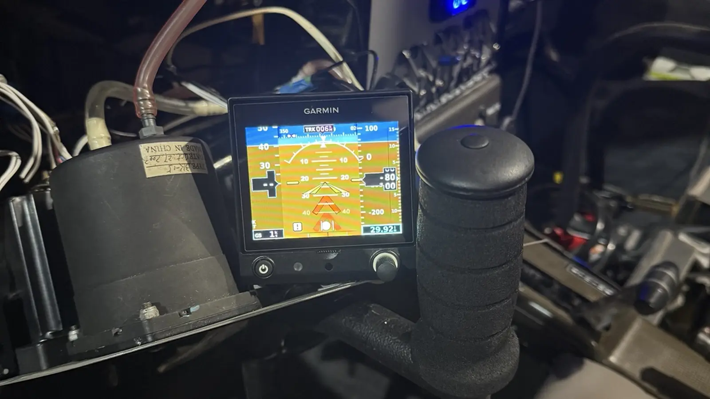
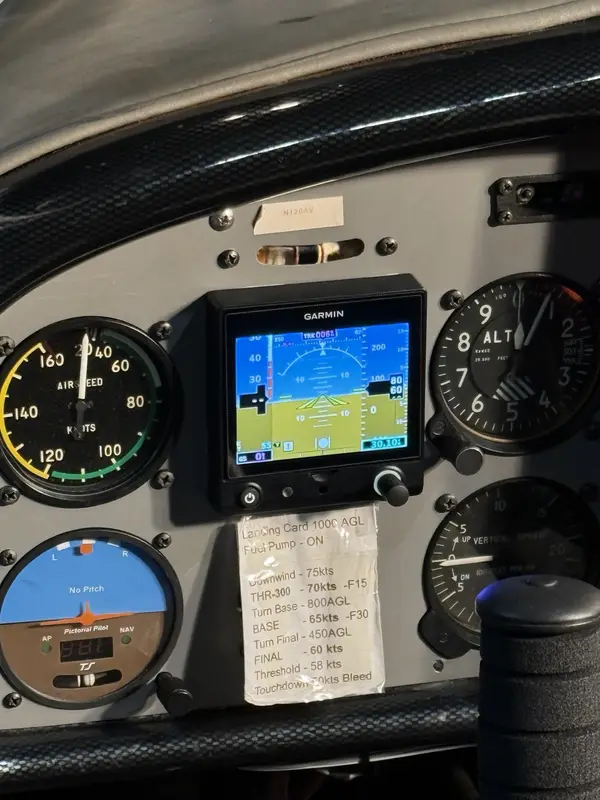
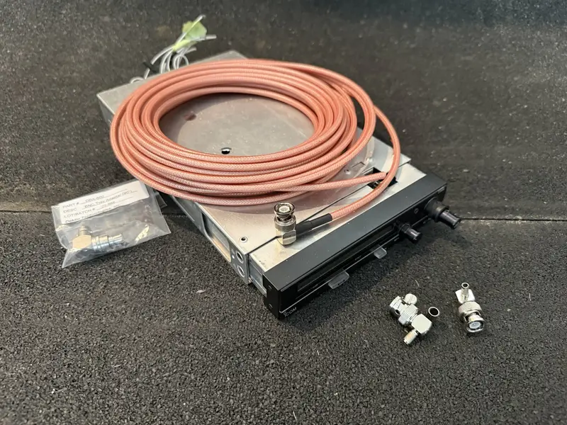
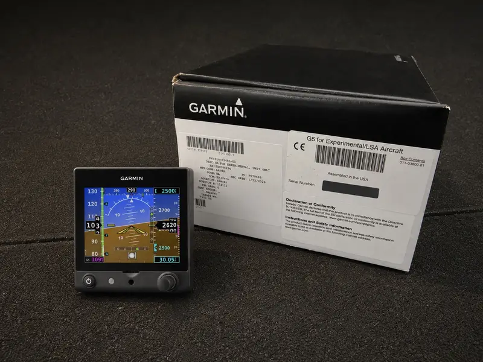
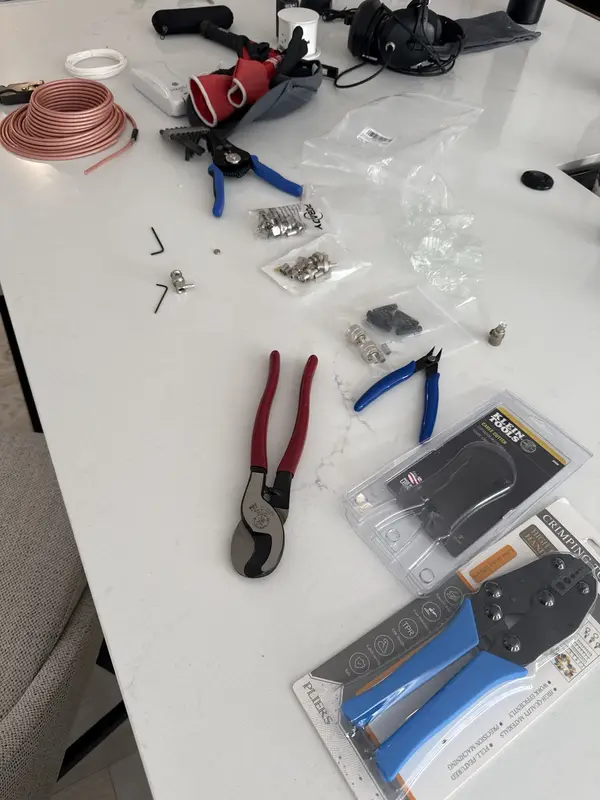

Light-Sport & Experimental Avionics Support
Avionics work is treated as an installed-system problem, not a box-swap assumption. The review starts with the aircraft, equipment, wiring, power, grounds, antennas, configuration, and records.
Installed-aircraft review
Panel, radio, display, wiring, power, grounds, and antenna issues are reviewed as one aircraft system. Support starts with symptoms, photos, configuration, records, and practical next-step isolation before parts or panel changes.
Installed-System Review
Work the Symptom, Configuration, and Aircraft Context Together.
This service line extends the same root-cause approach used on the ROTAX side of the business. The goal is not to guess and swap parts. The goal is to understand the symptom, review the aircraft context, and define a clear practical next step.
Support is focused on LSA, E-LSA, and experimental aircraft, with owner-facing communication that keeps technical findings understandable.
Avionics / Electrical
Support May Include
- Garmin G5 and appropriate panel-support work
- Radio, comm, intercom, and audio troubleshooting
- Antenna, coax, BNC, and TNC connector work
- Display, wiring, and power-supply troubleshooting
- Connector inspection and repair
- Panel cleanup, organization, and wiring discipline
Avionics Proof
Displays, Radios, Power, Antennas, and Terminations Are Reviewed Together.
These photos show the practical range of the work: installed displays, radio/coax components, test tools, and controlled termination repair.





Why This Fits Lima Charlie Aero
Calibration Discipline Applied to Aircraft Systems.
- 20+ years of calibration, TMDE, test-support-equipment, and quality-focused technical experience
- Hands-on LSA, E-LSA, and experimental aircraft ownership and troubleshooting
- Real-world wiring, coax, panel, and equipment troubleshooting experience
- Direct owner communication without unnecessary jargon
Appropriate Scope
Clear Boundaries Keep the Work Credible.
Avionics support is focused on light-sport and experimental aircraft and on practical owner/operator support, installation help, troubleshooting, and system organization. If a project requires outside certification, inspection, or signoff beyond that scope, I can help identify the next practical step.